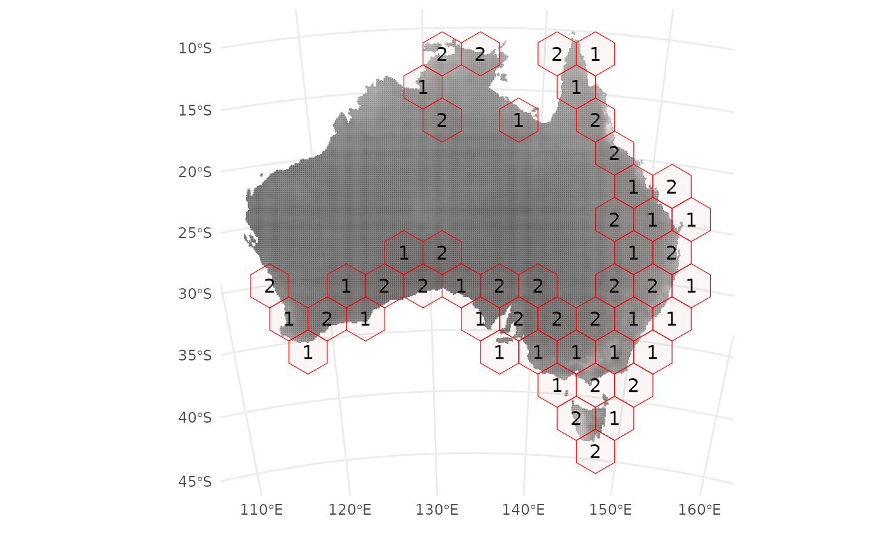

Introduction to package 'confcons'
Ákos Bede-Fazekas, Imelda Somodi
2021-12-07
Source:vignettes/introduction_to_confcons.Rmd
introduction_to_confcons.RmdConfidence and consistence: what are they and why using them?
‘confcons’ (confidence & consistence) is a light-weight, stand-alone R package designed to calculate the following two novel measures of predictive/potential distribution models (incl. species distribution models):
- confidence that measures the proportion of predictions that the model is confident in;
- consistence that measures how consistent the model is if the confidence in the training and evaluation subsets are compared.
While confidence serves as a replacement for the widely criticized goodness-of-fit measures, such as AUC, consistence is a proxy for model’s transferability (in space and time). Both measures can be calculated
- in a balanced way, when predicted presences and predicted absences are equally important. These measures are called confidence in predictions (‘CP’) and consistence of (or difference in confidences in) predictions (‘DCP’);
- in a way weighted towards the predicted presences, when certain positive presences are more important for the selected modelling purpose. These measures are called confidence in positive predictions (‘CPP’) and consistence of (or difference in confidences in) positive predictions (‘DCPP’).
A manuscript about the novel measures is submitted to a scientific journal. Once accepted, we’ll cite it here, and you’ll get much more information about the measures from that paper.
Functions for calculating confidence and consistence
Three small functions, thresholds(), confidence() and consistence(), belong to the core of the package. A wrapper function called measures() utilizes these workhorse functions and calculates every measures for you optionally along with some traditional measures, such as AUC and maxTSS.
In the example below we’ll see how these function work and what are their parameters and returned value. For further details, please consult with the help page of the selected function and the examples given there.
Workflow
Introduction
Here, we’ll go through the main steps of a typical workflow by:
- loading some environmental and presence-absence data using the example dataset of package ‘blockCV’;
- splitting the dataset to training and evaluation subset using spatial blocks;
- training some simple models on the training subset;
- making predictions to the whole dataset;
- evaluating our models and
- interpreting the measures returned by
confcons::measures().
First, we install package ‘confcons’ and their dependencies needed for this tutorial (incl. ‘raster’, ‘sf’, ‘blockCV’, ‘ranger’ and ‘ROCR’):
# install.packages("devtools")
devtools::install_github(repo = "bfakos/confcons", upgrade = "never", dependencies = TRUE)If installed, we can attach these packages to the R session (and suppress the not too important warnings about the R version under the packages were built):
suppressWarnings(library(raster))
#> Loading required package: sp
suppressWarnings(library(sf))
#> Linking to GEOS 3.8.0, GDAL 3.0.4, PROJ 6.3.1
suppressWarnings(library(blockCV))
suppressWarnings(library(ranger))
suppressWarnings(library(ROCR))
suppressWarnings(library(confcons))Data preparation
Let’s open the environmental raster that contains eight climatic and two topographic layers at 800 m resolution in UTM projection:
environment <- raster::brick(system.file("extdata", "awt.grd", package = "blockCV"))
nlayers(environment)
#> [1] 10
(predictors <- names(environment))
#> [1] "bc01" "bc04" "bc05" "bc06" "bc12" "bc17" "bc20" "bc33" "slope"
#> [10] "topo"
proj4string(environment)
#> [1] "+proj=utm +zone=55 +south +datum=WGS84 +units=m +no_defs"
res(environment)
#> [1] 800 800We open also the occurrence data from a .csv file and convert them to Simple Features:
occurrences <- read.csv(system.file("extdata", "PA.csv", package = "blockCV"))
occurrences <- sf::st_as_sf(x = occurrences,
coords = c("x", "y"),
crs = raster::crs(environment))For further details on the dataset, please refer to this vignette.
Now we split the study region to training and evaluation parts using random spatial blocks and convert the resulted blocks to Simple Features:
blocks <- blockCV::spatialBlock(speciesData = occurrences,
species = "Species",
rasterLayer = environment,
theRange = 50000,
k = 2,
selection = "random",
showBlocks = FALSE,
seed = 12345,
progress = FALSE,
verbose = FALSE)
blocks_sf <- sf::st_as_sf(x = blocks$blocks)Let’s see where are our presence and absence points and also which polygons will be used for training and which ones for evaluation:
plot(x = environment[["bc01"]], axes = FALSE, col = cm.colors(255), colNA = "gray95")
plot(x = occurrences[occurrences$Species == 1, ], pch = "+", col = "darkgreen", add = TRUE)
plot(x = occurrences[occurrences$Species == 0, ], pch = "+", col = "orange", add = TRUE)
plot(x = sf::st_geometry(blocks_sf[blocks_sf$folds == 1, ]), col = "transparent", border = "#2222DD66", lwd = 2, add = TRUE)
plot(x = sf::st_geometry(blocks_sf[blocks_sf$folds == 2, ]), col = "transparent", border = "#DD222266", lwd = 2, add = TRUE)
legend(x = 140000,
y = 8000000,
legend = c("presence", "absence", "training", "evaluation"),
col = c("darkgreen", "orange", NA, NA),
pch = c("+", "+", NA, NA),
border = c(NA, NA, "#2222DD66", "#DD222266"),
fill = c(NA, NA, "transparent", "transparent"))
We start to build a data.frame that will contain
- the predictor values in the presence and absence locations,
- the observed occurrences,
- the training mask (
TRUEfor the location later used for model training,FALSEfor evaluation locations), and - the predicted probabilities of occurrence (latter appended).
raster::extraxt() gathers the predictors from the studied locations for us. blocks$folds[[1]] contains two vectors of indices. We’ll use the first vector for training (and the second one for evaluation).
dataset <- raster::extract(x = environment,
y = occurrences,
df = TRUE)
dataset$occurrences <- occurrences$Species
dataset$training_mask <- (1:nrow(occurrences)) %in% blocks$folds[[1]][[1]]
str(dataset)
#> 'data.frame': 254 obs. of 13 variables:
#> $ ID : num 1 2 3 4 5 6 7 8 9 10 ...
#> $ bc01 : num 20 20 20 18 20 20 21 20 20 21 ...
#> $ bc04 : num 100 98 93 97 102 102 94 111 95 110 ...
#> $ bc05 : num 28 29 28 26 28 29 29 29 28 29 ...
#> $ bc06 : num 10 10 11 10 10 10 12 11 11 11 ...
#> $ bc12 : num 30 25 19 26 26 24 34 16 23 15 ...
#> $ bc17 : num 27 21 12 20 23 21 28 8 18 7 ...
#> $ bc20 : num 180 182 188 183 182 183 179 192 184 192 ...
#> $ bc33 : num 85 69 39 64 78 73 79 26 56 23 ...
#> $ slope : num 16 10 12 20 10 7 35 3 7 22 ...
#> $ topo : num 35 44 66 55 49 46 39 53 62 55 ...
#> $ occurrences : int 1 1 1 1 1 1 1 1 1 1 ...
#> $ training_mask: logi FALSE FALSE TRUE FALSE FALSE FALSE ...Training models and making predictions
Now the data.frame contains all of the information needed to train predictive distribution models. For the sake of this example, we will create two simple models:
- a Generalized Linear Model (GLM) with a linear formula (i.e., without interactions) and stepwise predictor selection, and
- a Random Forest (RF) model with 1000, 3-level trees.
linear_formula <- as.formula(paste0("occurrences ~ ", paste(predictors, collapse = " + ")))
model_glm <- step(trace = 0,
object = glm(formula = linear_formula,
family = binomial(link = "logit"),
data = dataset[dataset$training_mask, ]))
dataset$predictions_glm <- predict(object = model_glm,
newdata = dataset,
type = "response")The GLM model was trained on the training subset (dataset[dataset$training_mask, ]) but all of the studied locations were used for prediction (i.e. training and evaluation subsets). A new column called ‘predictions_glm’ was append to the data.frame. We repeat the same procedure, now training the RF model:
model_rf <- ranger::ranger(formula = linear_formula,
data = dataset[dataset$training_mask, ],
num.trees = 1000,
min.node.size = 10,
max.depth = 3,
verbose = FALSE,
classification = FALSE)
dataset$predictions_rf <- predict(object = model_rf,
data = dataset,
type = "response",
verbose = FALSE)$predictions
str(dataset[, c("occurrences", "training_mask", "predictions_glm", "predictions_rf")])
#> 'data.frame': 254 obs. of 4 variables:
#> $ occurrences : int 1 1 1 1 1 1 1 1 1 1 ...
#> $ training_mask : logi FALSE FALSE TRUE FALSE FALSE FALSE ...
#> $ predictions_glm: num 0.934 0.981 0.916 0.996 0.908 ...
#> $ predictions_rf : num 0.875 0.918 0.856 0.902 0.905 ...Evaluation and interpretation
Models are trained, predictions are done, so one step is missing: the evaluation. This is where package ‘confcons’ will become useful…
Let’s take a look at the lower (mean predicted value in the absence locations) and upper (mean predicted value in the presence locations) thresholds below/above which we interpret the predicted values as certain negatives and certain positives, respectively. We use function thresholds() for this purpose, which needs the integer/logical vector of the observed predictions (called ‘observations’) and the numeric vector of the predicted probabilities of occurrence (called ‘predictions’) as input parameters. The function returns two values (i.e., a named numeric vector of length 2).
(thresholds_glm <- thresholds(observations = dataset$occurrences,
predictions = dataset$predictions_glm))
#> threshold1 threshold2
#> 0.1438731 0.8179655
(thresholds_rf <- thresholds(observations = dataset$occurrences,
predictions = dataset$predictions_rf))
#> threshold1 threshold2
#> 0.1823275 0.7732901Between 0.14 and 0.82, the predictions of the GLM model can be treated as uncertain predictions. The same holds for the RF model between 0.18 and 0.77.
Now we calculate two of the proposed evaluation measures, confidence in positive predictions (CPP) and confidence in predictions (CP). Both should be calculated using the evaluation subset. Function confidence() can calculate both measures, depending on the value of its parameter ‘type’. If it’s ‘positive’, we’ll get CPP, if it’s ‘neutral’, we’ll get CP that is not weighted towards the positive predictions. Beyond ‘type’ and the two previously mentioned parameters (‘observations’ and ‘predictions’) one more parameter is needed: ‘thresholds’. Of course, the previously calculated thresholds will perfectly suits for this purpose.
conf_P_eval <- confidence(observations = dataset$occurrences[!dataset$training_mask],
predictions = dataset$predictions_glm[!dataset$training_mask],
thresholds = thresholds_glm,
type = "positive")
conf_P_eval
#> [1] 0.7407407
conf_N_eval <- confidence(observations = dataset$occurrences[!dataset$training_mask],
predictions = dataset$predictions_glm[!dataset$training_mask],
thresholds = thresholds_glm,
type = "neutral")
conf_N_eval
#> [1] 0.7586207There is not so much difference between the two measures. Whether we should use CPP or CP for describing the confidence of our model depends on the main aim of our model. Confidence should be between 0 and 1; the higher value indicates more confidence. Our GLM is not super confident, but the value is closer to 1, so it seems more or less OK.
We are a bit curios whether the confidence of the model is higher or lower if is calculated for the training subset.
conf_P_train <- confidence(observations = dataset$occurrences[dataset$training_mask],
predictions = dataset$predictions_glm[dataset$training_mask],
thresholds = thresholds_glm,
type = "positive")
conf_P_train
#> [1] 0.7719298
conf_P_eval < conf_P_train
#> [1] TRUEOf course, the model is more confident in the training subset than in the evaluation subset. This is absolutely normal (and would be strange if the opposite occurs). Which is not evident is the difference between the two and its interpretation. consistence() is the function that do the magic for us: a simple subtraction… It needs one of the two confidence measures (CPP or CP) for the training and the evaluation dataset, and returns their difference.
consistence(conf_train = conf_P_train, conf_eval = conf_P_eval)
#> [1] -0.03118908A negative value between -1 and 0 is normal. The higher the consistence is (i.e., the closer to 0), the more consistent the model is. Positive value might be an artifact or indicates that the training and evaluation subsets were accidentally swapped.
Now we get familiar with the three core functions of the package: thresholds(), confidence() and consistence(). Your question is right if you ask: why should I call three different functions several times if I want to get all the measures for my model?. Well, you don’t have to. There is a wrapper function called measures() that calculates everything for you.
It needs three vectors:
- the
integer/logicalvector of observed occurrences (‘observations’), - the
numericvector of predicted probabilities of occurrence (‘predictions’), and - the
logicalmask of the evaluation locations (‘evaluation_mask’).
Previously we calculated the mask of the training locations, so its negation (!) will perfectly match this purpose:
measures(observations = dataset$occurrences,
predictions = dataset$predictions_glm,
evaluation_mask = !dataset$training_mask)
#> CP_train CP_eval DCP CPP_train CPP_eval DCPP
#> 0.77586207 0.75862069 -0.01724138 0.77192982 0.74074074 -0.03118908
measures(observations = dataset$occurrences,
predictions = dataset$predictions_rf,
evaluation_mask = !dataset$training_mask)
#> CP_train CP_eval DCP CPP_train CPP_eval DCPP
#> 0.8620690 0.6724138 -0.1896552 0.8620690 0.6415094 -0.2205595The result is a named numeric vector containing all of the measures. It is more than needed. I recommend you to use ‘CPP_eval’ + ‘DCPP’, or, if predicted absences are as important as predicted presences in your research, use ‘CP_eval’ + ‘DCP’.
We can see that RF model is really confident in its predictions if the training subset is studied, but this confidence sharply drops when switching to the evaluation subset. Hence, the RF model is not too consistent, which warns us that transferability issues might potentially occurs if used for extrapolation. The GLM model is much more consistent, so if I were you, I would select that one for extrapolation, e.g. in a climate change impact study!
If you have installed package ‘ROCR’, measures() can provide the Area Under the ROC Curve (AUC) and the maximum of True Skill Statistic (maxTSS) for you. You should simply switch the parameter ‘goodness’ from its default value (FALSE) to TRUE.
measures(observations = dataset$occurrences,
predictions = dataset$predictions_glm,
evaluation_mask = !dataset$training_mask,
goodness = TRUE)
#> CP_train CP_eval DCP CPP_train CPP_eval DCPP
#> 0.77586207 0.75862069 -0.01724138 0.77192982 0.74074074 -0.03118908
#> AUC maxTSS
#> 0.90517241 0.72515213Evaluating multiple models
There is one another logical parameter, called ‘df’, by which you can decide whether a one-row data.frame is more suited for your analysis purposes.
measures(observations = dataset$occurrences,
predictions = dataset$predictions_rf,
evaluation_mask = !dataset$training_mask,
goodness = TRUE,
df = TRUE)
#> CP_train CP_eval DCP CPP_train CPP_eval DCPP AUC
#> 1 0.862069 0.6724138 -0.1896552 0.862069 0.6415094 -0.2205595 0.8602941
#> maxTSS
#> 1 0.7003043For example, if you have several models (i.e., two in this example), you can simply rbind() these rows in a for loop or a lapply():
model_IDs <- c("glm", "rf")
for (model_ID in model_IDs) {
column_name <- paste0("predictions_", model_ID)
conf_and_cons <- measures(observations = dataset$occurrences,
predictions = dataset[, column_name, drop = TRUE],
evaluation_mask = !dataset$training_mask,
df = TRUE)
if (model_ID == model_IDs[1]) {
conf_and_cons_df <- conf_and_cons
} else {
conf_and_cons_df <- rbind(conf_and_cons_df, conf_and_cons)
}
}
rownames(conf_and_cons_df) <- model_IDs
conf_and_cons_df
#> CP_train CP_eval DCP CPP_train CPP_eval DCPP
#> glm 0.7758621 0.7586207 -0.01724138 0.7719298 0.7407407 -0.03118908
#> rf 0.8620690 0.6724138 -0.18965517 0.8620690 0.6415094 -0.22055953The lapply() solution:
conf_and_cons_list <- lapply(X = model_IDs,
FUN = function(model_ID) {
column_name <- paste0("predictions_", model_ID)
measures(observations = dataset$occurrences,
predictions = dataset[, column_name, drop = TRUE],
evaluation_mask = !dataset$training_mask,
df = TRUE)
})
conf_and_cons_df <- do.call(what = rbind,
args = conf_and_cons_list)
rownames(conf_and_cons_df) <- model_IDs
conf_and_cons_df
#> CP_train CP_eval DCP CPP_train CPP_eval DCPP
#> glm 0.7758621 0.7586207 -0.01724138 0.7719298 0.7407407 -0.03118908
#> rf 0.8620690 0.6724138 -0.18965517 0.8620690 0.6415094 -0.22055953